| Znak | Nazwa |
|---|---|
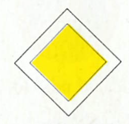 | Droga z pierwszeństwem |
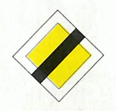 | Koniec drogi z pierwszeństwem |
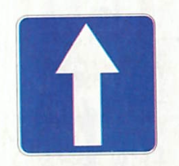 | Droga jednokierunkowa |
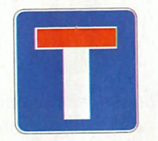 | Droga bez przejazdu |
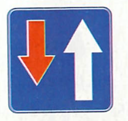 | Pierwszeństwo na zwężonym odcinku jezdni |
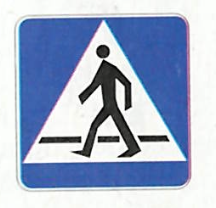 | Przejście dla pieszych |
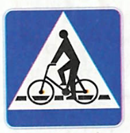 | Przejazd dla rowerzystów |
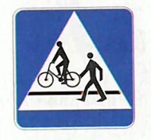 | Przejście dla pieszych i przejazd dla rowerzystów |
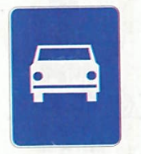 | Droga ekspresowa |
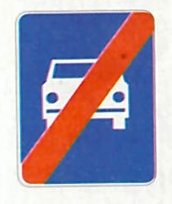 | Koniec drogi ekspresowej |
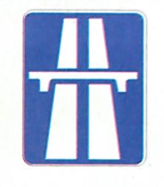 | Autostrada |
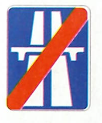 | Koniec autostrady |
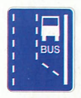 | Początek pasa ruchu dla autobusów |
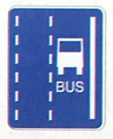 | Pas ruchu dla autobusów |
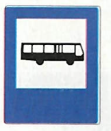 | Przystanek autobusowy |
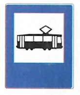 | Przystanek tramwajowy |
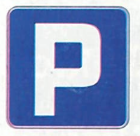 | Parking |
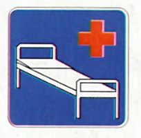 | Szpital |
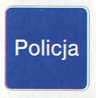 | Policja |
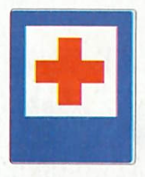 | Punkt opatrunkowy |
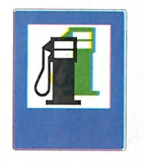 | Stacja paliwowa |
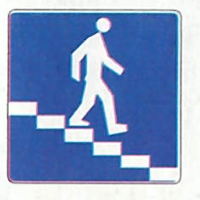 | Przejście podziemne dla pieszych |
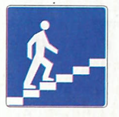 | Przejście nadziemne dla pieszych |
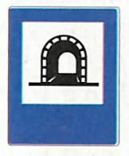 | Tunel |
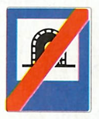 | Koniec tunelu |
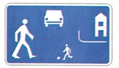 | Strefa zamieszkania |
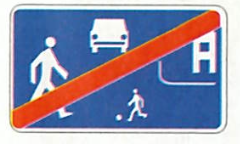 | Koniec strefy zamieszkania |
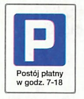 | Strefa parkowania |
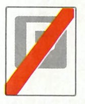 | Koniec strefy parkowania |
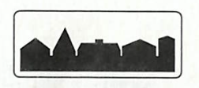 | Obszar zabudowany |
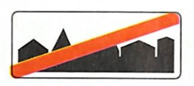 | Koniec obszaru zabudowanego |
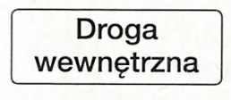 | Droga wewnętrzna |
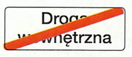 | Koniec drogi wewnętrznej |
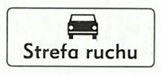 | Strefa ruchu |
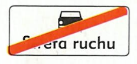 | Koniec strefy ruchu |
| Znak | Nazwa |
|---|---|
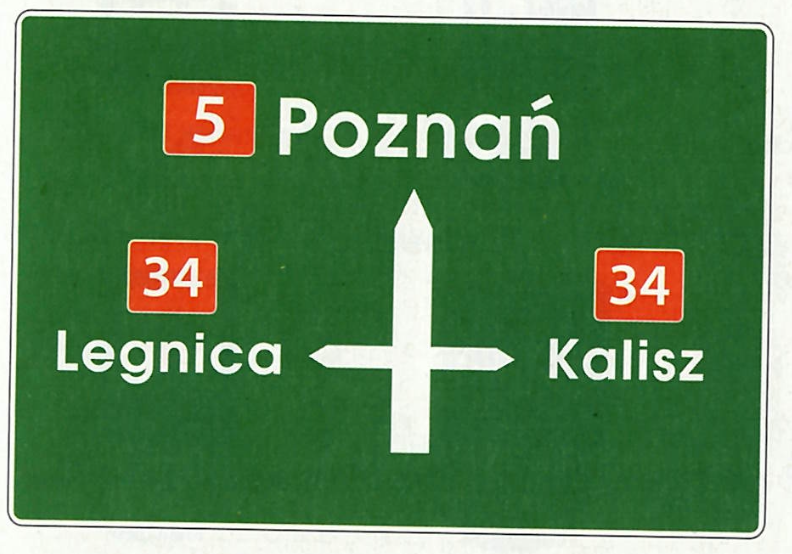 | Tablica przeddrogowskazowa |
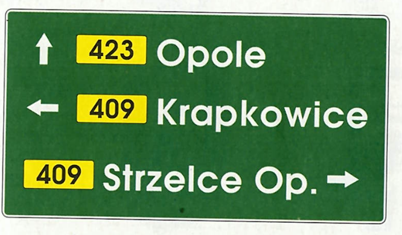 | Drogowskaz tablicowy umieszczany obok jezdni |
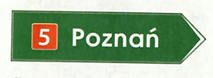 | Drogowskaz w kształcie strzały do miejscowości wskazujący numer drogi |
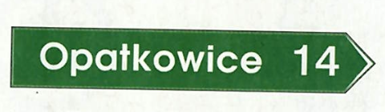 | Drogowskaz w kształcie strzały do miejscowości podający do niej odległość |
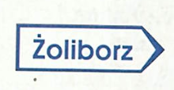 | Drogowskaz do dzielnicy miasta |
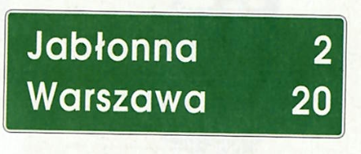 | Tablica kierunkowa |
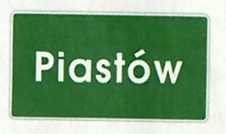 | Miejscowość |
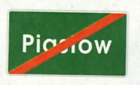 | Koniec miejscowości |
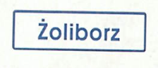 | Dzielnica (osiedle) |
| Znak | Nazwa |
|---|---|
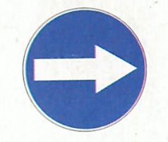 | Nakaz jazdy w prawo przed znakiem |
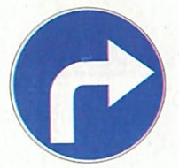 | Nakaz jazdy w prawo za znakiem |
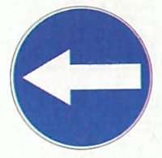 | Nakaz jazdy w lewo za znakiem przed znakiem |
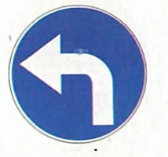 | Nakaz jazdy w lewo za znakiem |
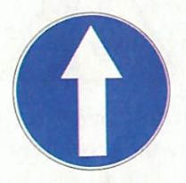 | Nakaz jazdy prosto |
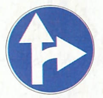 | Nakaz jazdy prosto lub w prawo |
| Nakaz jazdy prosto lub w lewo | |
| Nakaz jazdy w prawo lub w lewo | |
| Nakaz jazdy z prawej strony znaku | |
| Nakaz jazdy z lewej strony znaku | |
| Nakaz jazdy z prawej lub lewej strony znaku | |
| Ruch okrężny | |
| Droga dla rowerów | |
| Koniec drogi dla rowerów | |
| Prędkość minimalna | |
| Koniec prędkości minimalnej | |
| Droga dla pieszych | |
| Koniec drogi dla pieszych |
| Znak | Nazwa |
|---|---|
| Niebezpieczny zakręt w prawo | |
| Niebezpieczny zakręt w lewo | |
| Niebezpieczne zakręty - pierwszy w prawo | |
| Niebezpieczne zakręty - pierwszy w lewo | |
| Skrzyżowanie dróg | |
| Skrzyżowanie z drogą podporządkowaną występującą po obu stronach | |
| Skrzyżowanie z drogą podporządkowaną występującą po prawej stronie | |
| Skrzyżowanie z drogą podporządkowaną występującą po lewej stronie | |
| Wlot drogi jednokierunkowej z prawej strony | |
| Wlot drogi jednokierunkowej z lewej strony | |
| Ustąp pierwszeństwa | |
| Skrzyżowanie o ruchu okrężnym | |
| Przejazd kolejowy z zaporami | |
| Przejazd kolejowy bez zapór | |
| Nierówna droga | |
| Próg zwalniający | |
| Zwężenie jezdni - dwustronne | |
| Zwężenie jezdni - prawostronne | |
| Zwężenie jezdni - lewostronne | |
| Roboty na drodze | |
| Śliska jezdnia | |
| Przejście dla pieszych | |
| Dzieci | |
| Zwierzęta gospodarskie | |
| Zwierzęta dzikie | |
| Odcinek jezdni o ruchu dwukierunkowym | |
| Tramwaj | |
| Niebezpieczny zjazd | |
| Stromy podjazd | |
| Rowerzyści | |
| Nabrzeże lub brzeg rzeki | |
| Sygnały świetlne | |
| Inne niebezpieczeństwo | |
| Niebezpieczne pobocze | |
| Oszronienie jezdni |
| Znak | Nazwa |
|---|---|
| Linia pojedyncza przerywana | |
| Linia pojedyncza ciągła | |
| Linia jednostronnie przekraczalna | |
| Linia podwójna ciągła | |
| Linia podwójna przerywana | |
| Linia ostrzegawcza | |
| Linia krawędziowa przerywana | |
| Linia krawędziowa ciągła | |
| Strzałka kierunkowa na wprost | |
| Strzałka kierunkowa do skręcania | |
| Strzałka kierunkowa do zawracania | |
| Strzałka naprowadzająca | |
| Przejście dla pieszych | |
| Przejazd dla rowerzystów | |
| Linia bezwzględnego zatrzymania - stop | |
| Linia warunkowego zatrzymania złożona z trójkątów | |
| Linia warunkowego zatrzymania złożona z prostokątów | |
| Trójkąt podporządkowania | |
| Napis stop | |
| Powierzchnia wyłączona | |
| BUS | |
| Rower | |
| Miejsce dla pojazdu osoby niepełnosprawnej |
| Znak | Nazwa |
|---|---|
| Słupek wskaźnikowy z trzema kreskami | |
| Słupek wskaźnikowy z dwiema kreskami | |
| Słupek wskaźnikowy z jedną kreską | |
| Krzyż św. Andrzeja przed przejazdem kolejowym jednotorowym | |
| Krzyż św. Andrzeja przed przejazdem kolejowym wielotorowym |
| Znak | Nazwa |
|---|---|
| Sygnalizator z sygnałami do kierowania ruchem | |
| Sygnalizator z sygnałami dopuszczającym skręcanie w kierunku wskazanym strzałką | |
| Sygnalizator kierunkowy | |
| Sygnalizator z sygnałami dla pieszych | |
| Sygnalizator z sygnałami dla rowerzystów |
| Znak | Nazwa |
|---|---|
| Szlak rowerowy lokalny | |
| Początek (koniec) szlaku rowerowego lokalnego | |
| Zmiana kierunku szlaku rowerowego lokalnego | |
| Tablica szlaku rowerowego |
| Znak | Nazwa |
|---|---|
| Odległość znaku ostrzegawczego od miejsca niebezpiecznego | |
| Długość odcinka drogi, na którym powtarza się lub występuje niebezpieczeństwo | |
| Koniec odcinka, na którym powtarza się lub występuje niebezpieczeństwo | |
| Liczba zakrętów | |
| Początek drogi krętej | |
| Przebieg drogi z pierwszeństwem przez skrzyżowanie | |
| Układ dróg podporządkowanych | |
| Prostopadły przebieg drogi z pierwszeństwem i układ dróg podporządkowanych | |
| Miejsce częstych wypadków | |
| Miejsce wyjazdu pojazdów uprzywilejowanych | |
| Długość odcinka jezdni, na którym zakaz obowiązuje | |
| Odległość znaku od miejsca, od którego lub w którym zakaz obowiązuje | |
| Początek zakazu postoju lub zatrzymywania | |
| Kontynuacja zakazu postoju lub zatrzymywania | |
| Odwołanie zakazu postoju lub zatrzymywania | |
| Przejście dla pieszych szczególnie uczęszczane przez dzieci (Agatka) |
| Znak | Nazwa |
|---|---|
| Sposób jazdy w związku z zakazem skręcania w lewo | |
| Ruch skierowany na sąsiednią jezdnię | |
| Kierunki na pasach ruchu | |
| Niesymetryczny podział jezdni dla przeciwległych kierunków ruchu | |
| Koniec pasa ruchu na jezdni dwukierunkowej | |
| Pas ruchu dla określonych pojazdów |
| Znak | Nazwa |
|---|---|
| Zakaz ruchu w obu kierunkach | |
| Zakaz wjazdu | |
| Zakaz wjazdu rowerów | |
| Zakaz wjazdu wózków rowerowych | |
| Stop | |
| Zakaz skręcania w lewo | |
| Zakaz skręcania w prawo | |
| Zakaz zawracania | |
| Koniec zakazu zawracania | |
| Zakaz używania sygnałów dźwiękowych | |
| Koniec zakazu używania sygnałów dźwiękowych | |
| Pierwszeństwo dla nadjeżdżających z przeciwka | |
| Ograniczenie prędkości | |
| Koniec ograniczenia prędkości | |
| Zakaz postoju | |
| Zakaz zatrzymywania się | |
| Zakaz ruchu pieszych | |
| Koniec zakazów | |
| Strefa ograniczonej prędkości | |
| Koniec strefy ograniczonej prędkości |